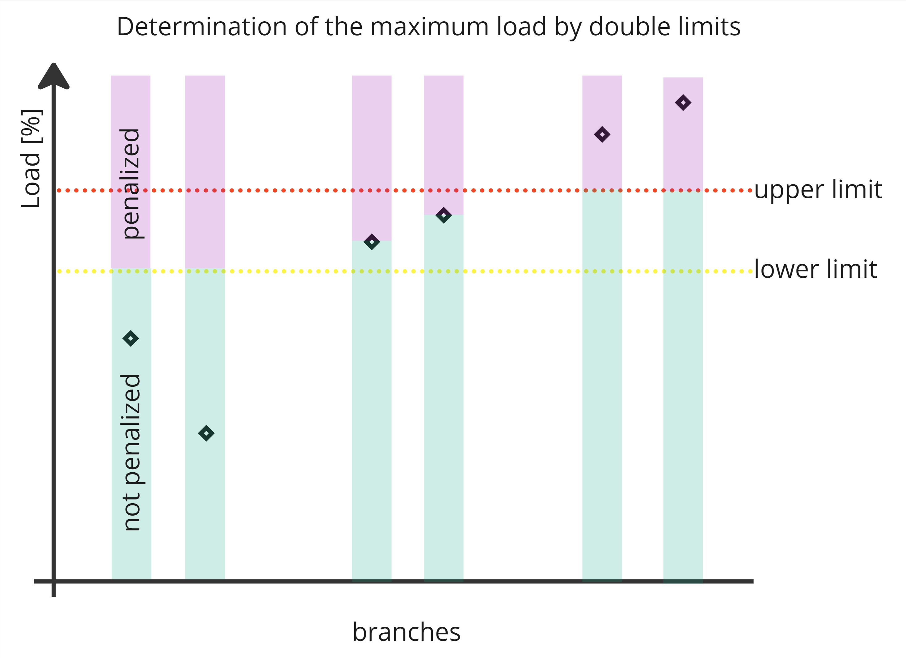
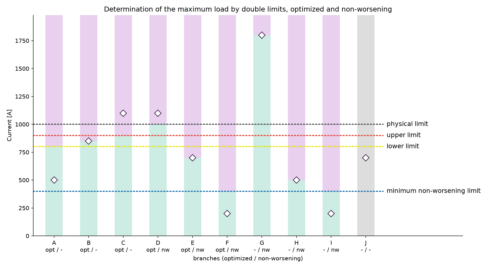

Artificial limits#
The importer sets the optimization limit of every monitored branch as the operational limits artificial_limit_n_0 and artificial_limit_n_1. The optimizer measures overloads against these limits instead of the physical limits. They are derived from the physical limit, the worst current of the branch, the branch role (optimized or non-worsening) and the double_limits parameter.
Double limits parameter#
double_limits (DoubleLimits) is part of the importer parameters. It has four fields. Three are factors relative to the physical limit, non_worsening_margin is relative to the worst current:
| Field | Meaning | Default |
|---|---|---|
lower |
Optimized branches below this share of the physical limit may be loaded up to it. | 1.0 |
upper |
Optimized branches above this share of the physical limit are reduced to it. | 1.0 |
minimum_lower_physical_non_worsening_limit |
Smallest artificial limit of non-worsening branches. Keeps branches with a low or zero flow above 0. | 0.4 |
non_worsening_margin |
Margin added to the worst current of non-worsening branches. Prevents numerical noise (e.g. 1e-10 above the limit) from counting as an overload, which would add a full overload count penalty. | 0.01 |
lower must not exceed upper. With the defaults, optimized branches get their physical limit. Non-worsening branches are limited to their worst current plus non_worsening_margin, or to the minimum_lower_physical_non_worsening_limit physical limit. If a branch is both optimized and non-worsening, the margin never lifts the limit above the physical limit.

Inputs#
The limits are computed after the AC security analysis of the import, for every branch side and separately for the base case (n_0) and the contingencies (n_1). The importer worker stores this analysis, with the new limits attached, as the initial loadflow.
| Input | N-0 | N-1 |
|---|---|---|
| Flow | Absolute current in the base case. | Largest absolute current over all converged contingencies. The N-0 current if the branch has no N-1 result. |
| Physical limit | permanent_limit, or loadflow_based_n_0 if the importer created it. |
dacf_permanent_n_1, or loadflow_based_n_1 if the importer created it. The N-0 limit if the branch has no N-1 limit. |
| Role | optimized or non_worsening of the monitored element in the N-1 definition. |
Same. |
Artificial limit by branch role#
The artificial limit depends on the two flags optimized and non_worsening of the branch, its worst current and the physical limit. Example with a physical limit of 1000 A, lower 0.8, upper 0.9 and minimum_lower_physical_non_worsening_limit 0.4 and non_worsening_margin 0.01, so the lower limit is 800 A, the upper limit 900 A and the minimum non-worsening limit 400 A:
| Branch | Optimized | Non-worsening | Worst current | Artificial limit | Effect |
|---|---|---|---|---|---|
| A | true | false | 500 A | 800 A | Below the lower limit: lower times the physical limit. May be loaded up to the lower limit. |
| B | true | false | 850 A | 850 A | Between limits: loading must not get worse. |
| C | true | false | 1100 A | 900 A | Above the upper limit: upper times the physical limit. The current must be reduced to the upper limit. |
| D | true | true | 1100 A | 1000 A | Overloaded: the physical limit. lower and upper are ignored. |
| E | true | true | 700 A | 707 A | Not overloaded: lower and upper are ignored. The worst current plus non_worsening_margin. |
| F | true | true | 200 A | 400 A | Not overloaded: the minimum non-worsening limit is the lowest limit, loading is allowed to increase to this minimum_lower_physical_non_worsening_limit. |
| G | false | true | 1800 A | 1818 A | Overloaded and non-worsening: loading must not be increased. |
| H | false | true | 500 A | 505 A | Not overloaded and non-worsening: loading must not be increased beyond the margin. |
| I | false | true | 200 A | 400 A | Not overloaded, non-worsening and below min lower physical limit: loading may increase to minimum_lower_physical_non_worsening_limit. |
| J | false | false | 700 A | none | Not monitored. |

Branches without a worst current or a physical limit get no artificial limit. The importer never sets both flags, branches D, E and F show the result if both are set.
Written limits#
- Limits are written for lines, two-winding transformers and tie lines. Three-winding transformers are already replaced by their legs.
- The limit name is
artificial_limit_n_0orartificial_limit_n_1, with the acceptable duration 100 and 200. - A new limit replaces an existing limit of the same element, side and name. The limit group of the physical limit is kept.
- A tie line is handled as one branch: its flow is the larger current of both sides, its physical limit the smaller limit of both sides. The limit is written on both boundary lines.
Use in the optimizer#
- The AC contingency analysis reports the metrics
*_artificial_limit_n_0and*_artificial_limit_n_1next to the metrics against the permanent limit, see Metrics. The importer fillsoverload_energy_artificial_limit_n_0andoverload_energy_artificial_limit_n_1in the import statistics. - The DC solver reads
artificial_limit_n_0asmax_mw_flowandartificial_limit_n_1asmax_mw_flow_n_1. The currents are converted to MW with the voltage of the limit side. Branches without an artificial limit get 99999 MW. All DC overload metrics use these limits.
Results computed against the physical limits are not comparable with results against the artificial limits.